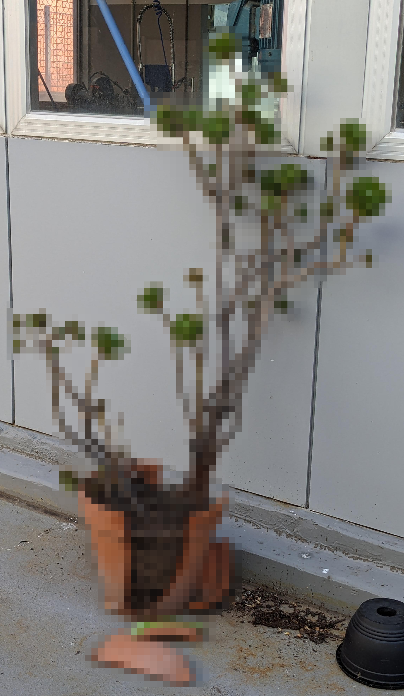

the_Poor_Image
is a copy in motion.
Its quality is bad,
its resolution substandard.
a preview,
a thumbnail,
an errant idea,
an itinerant image distributed for free,
squeezed through slow digital connections,
compressed,
reproduced,
ripped,
remixed,
as well as copied and pasted into other channels of distribution.
Its quality is bad,
its resolution substandard.
As it accelerates, it deteriorates.
It is a ghost of an image, a preview,
a thumbnail,
an errant idea,
an itinerant image distributed for free,
squeezed through slow digital connections,
compressed,
reproduced,
ripped,
remixed,
as well as copied and pasted into other channels of distribution.

the_Poor_Image
is a rag or rip;
an AVI or a JPEG,
a lumpen proletarian in the class society of appearances,
an AVI or a JPEG,
a lumpen proletarian in the class society of appearances,
ranked and valued according to resolution.
Thr_Poor_Image
has been
uploaded,
downloaded,
shared,
reformatted
and reedited.
uploaded,
downloaded,
shared,
reformatted
and reedited.
It transforms quality into accessibility,
exhibition value into cult value,
films into clips,
contemplation into distraction.
films into clips,
contemplation into distraction.

The image is liberated from the vaults of cinemas and archives
and thrust into digital uncertainty, at the expense of its own substance.
and thrust into digital uncertainty, at the expense of its own substance.
the_Poor_Imagr
tends towards abstraction: it is a visual idea in its very becoming.
the_Pooor_Image
is an illicit fifth-generation bastard of an original image.
Its genealogy is dubious.
Its filenmaes are deliberately mislspled.
It often defies patrimony,
national culture,
or indeed copyright.
Its genealogy is dubious.
Its filenmaes are deliberately mislspled.
It often defies patrimony,
national culture,
or indeed copyright.
It is passed on as
a lure,
a decoy,
an index, or
as a reminder
of its former visual self.
It mocks the promises of digital technology.
Not only is it often degraded to the point of being just a hurried blur, one even doubts whether it could be called an image at all. Only digital technology could produce such a dilapidated image in the first place.
a lure,
a decoy,
an index, or
as a reminder
of its former visual self.
It mocks the promises of digital technology.
Not only is it often degraded to the point of being just a hurried blur, one even doubts whether it could be called an image at all. Only digital technology could produce such a dilapidated image in the first place.
Poor_Imagez
are the contemporary Wretched of the Screen,
the debris of audiovisual production,
the trash that washes up on the digital economies’ shores.
They testify to the violent dislocation,
transferrals,
and displacement of images -
their acceleration and circulation within the vicious cycles of audiovisual capitalism.
the debris of audiovisual production,
the trash that washes up on the digital economies’ shores.
They testify to the violent dislocation,
transferrals,
and displacement of images -
their acceleration and circulation within the vicious cycles of audiovisual capitalism.
poor_images
are dragged around the globe ascommodities or their effigies,
as gifts or as bounty.
They spread pleasure or death threats,
conspiracy theories or bootlegs,
resistance or stultification.
poor_imgaes
show the rate, the obvious and the unbelievable – that is, if we can still
manage to decipher it.
1.low_reso
Focus is identified as a class position, a position of ease and privilege, while being out of focus lowers one's value as an image.
In flagship stores high-end products are marketed in an upscale environment.
More affordable derivatives of the same images circulate as DVDs, on broadcast television or online, as
In flagship stores high-end products are marketed in an upscale environment.
More affordable derivatives of the same images circulate as DVDs, on broadcast television or online, as
poor_images........
The insistence upon analog film as the sole medium of visual importance resounded
throughout discourses on cinema, almost regardless of their ideological inflection.
It never mattered that these high-end economies of film production were (and still are)
firmly anchored in systems of national culture, capitalist studio production, the cult of
mostly male genius, and the original version, and thus are often conservative in their very structure.

Resolution was fetishized as if its lack amounted to castration of the author. The cult of film gauge
dominated even independent film production.
The rich image established its own set of hierarchies, with
new technologies offering more and more possibilities to creatively degrade it.
2.resurrection
Twenty or even thirty years ago, the neoliberal restructuring of media production began slowly obscuring non-commercial imagery, to the point where experimental and essayistic cinema became almost invisible.
This development was of course connected to the neoliberal radicalization of the concept of culture as commodity, to the commercialization of cinema, its dispersion into multiplexes, and the marginalization of independent filmmaking.

It was also connected to the restructuring of global media industries and the establishment of monopolies over the audiovisual in certain countries or territories. In this way, resistant or non-conformist visual matter disappeared from the surface into an underground of alternative archives and collections, kept alive only by a network of committed organizations and individuals, who would circulate bootlegged VHS copies amongst themselves.
Clandestine cell-phone videos smuggled out of museums are broadcast on YouTube. DVDs of artists’ viewing copies are bartered. Many works of avant-garde, essayistic, and non-commercial cinemas have been resurrected as
poor images.
Whether they like it
or not.
or not.
3.privatisation_n_piracy
Poor images
are poor because they are not assigned any value within the class society of images
– their stats as illicit or degraded grants them exemption from its criteria. Their lack of resolution attests to their appropriation and displacement.
Privatization of media production gradually grew more important than state controlled/sponsored media production.

But, on the other hand, the rampant privatization of
intellectual content,
along with online marketing
and commodification,
also enable piracy and appropriation;
it gives rise to the circulation of
intellectual content,
along with online marketing
and commodification,
also enable piracy and appropriation;
it gives rise to the circulation of
poor images.
4.imperfect_cinemaa
The imperfect cinema is one that strives to overcome the divisions of labour within class society.
It merges art with life and science,
blurring the distinction between
consumer and producer,
audience and author.
It insists upon its own imperfection,
is popular but not consumerist,
committed without becoming bureaucratic.
It merges art with life and science,
blurring the distinction between
consumer and producer,
audience and author.
It insists upon its own imperfection,
is popular but not consumerist,
committed without becoming bureaucratic.
Like the economy of
author and audience and
merges life and art.
poor images,
imperfect cinema diminished the distinctions between author and audience and
merges life and art.

The networks in which
and a battleground for commercial and national agendas.
While it enables the users’ active participation in the creation and distribution of content,
it also drafts them into production.
Users become the editors,
critics,
translators,
and (co-)authors of
poor images
circulate thus constitute both a platform for a fragile new common interest and a battleground for commercial and national agendas.
While it enables the users’ active participation in the creation and distribution of content,
it also drafts them into production.
Users become the editors,
critics,
translators,
and (co-)authors of
poor images…
Poor images
are thus popular images – images that can be made and seen by the many…
Poor images
are poor because they are heavily compressed and travel quickly. They lose matter and gain speed.
In a way,
the poor image
is subject to a similar tension. On the one hand, it operates against the fetish value of high resolution. On the other hand, this is precisely why it also ends up being perfectly integrated into an information capitalism thriving on compressed attention spans, on impression rather than immersion,
on intensity rather than contemplation,
on previews rather than screenings.
comrade_what_Is_urVisualBondToday?

The poor image
thus constructs anonymous global networks just as it creates a shared history… The circulation of
poor images
thus creates “visual bonds”…link{ing} the workers of the world with each other…there is also the circulation and production of
poor images
based on cell phone cameras, home computers, and
unconventional forms of distribution.
Its optical connections –
collective editing,
file sharing, or
grassroots distribution circuits –
reveal erratic and coincidental links between producers everywhere, which simultaneously constitute dispersed audiences.